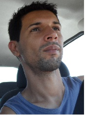

MARCOS RAFAEL DE ANDRADE

Rua Ta¢nia Mara N 32 Ibes Vila Velha-ES Tel: 99935-3143marcraf@gmail.com
Objetivo:
Colocar em praticar meus conhecimentos, favorecer o crescimento da organização, alinhar as melhores praticas de trabalho as estratégias de negócio da empresa.
Qualificações
Word, Excel, Delphi, Java-SE, HTML, Windows, Ms-Dos, C++, Windows Server 2008.
Conhecimentos
SAP-R3, Globe, TPM, SGI, VPN, TCP-IP, DHCP, DNS, WAN-LAN, Virtualização, Java web Jsf, Html, PHP, AngularJS, Jquery, CSS, Linux, COBIT, ITIL, Governança Corporativa, SAP-R3
Idiomas: Inglês: Cursando (Ceicon).
Experiência Profissional:
Chocolates Garoto S.A (08/04/15)